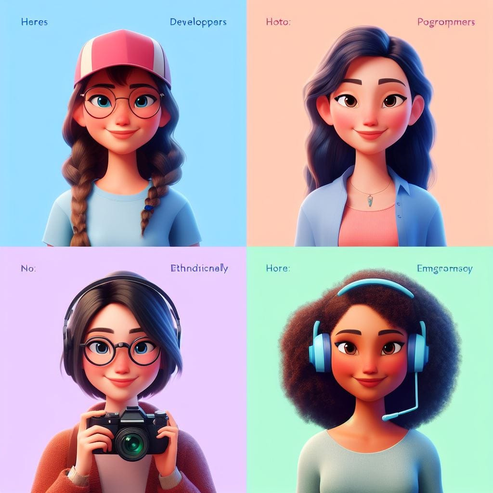

Conoce a nuestro equipo!
Nuestro grupo, llamado LOPER, está compuesto por integrantes de la zona de Gran La Plata. Estamos trabajando en esta página web como parte de un proyecto social propuesto en la consigna del curso de YPF Ingenias. Nuestro objetivo es demostrar los conceptos adquiridos en HTML y CSS mientras abordamos un tema social importante, como la prevención de la violencia contra las mujeres. A través de esta página, esperamos crear conciencia y proporcionar recursos útiles para aquellos que enfrentan esta problemática en nuestra comunidad.
Soy Daniela, tengo 37 años.
Soy empleada y emprendedora. Siempre me gustaron los idiomas por eso estoy estudiando Inglés, Señas y Programación.
Soy Jimena, tengo 45 años.
Soy perito contadora y estoy cursando mis últimas materias del profesorado de Inglés, algo que tenía pendiente. Actualmente estoy aprendiendo Desarrollo Web Frontend.
Soy Luisina,tengo 35 años.
Soy Arquitecta y emprendedora.Amante de la cocina. Soy practicante de yoga e instructora de Yoga integral. Actualmente estoy aprendiendo Desarrollo Web Frontend.
Soy Loreley,tengo 26 años.
Soy estudiante de Diseño multimedial y Diseño gráfico, estoy cursando un taller de encuadernacion y aprendiendo Desarrollo Web.
Recursos de Ayuda y Contactos Importantes:

Líneas Directas de Ayuda:
Números de teléfono o enlaces a líneas directas de ayuda disponibles las 24 horas para víctimas de violencia contra las mujeres.
- Línea 144 - Línea Nacional Gratuita de Atención a Mujeres en Situación de Violencia. Línea 144 - WhatsApp al 1127716463
- Líneas de asistencia y orientación con los los teléfono, días y horarios de las líneas.lineasdeasistencia
Organizaciones de Apoyo:
- Casa del Encuentro: lacasadelencuentro
- Fundación Mujeres en Igualdad: mujeresenigualdad
Recursos de Salud Mental:
- Red de Profesionales de Salud por el Derecho a Decidir: redsaluddecidir
Recursos Legales Adicionales:
- Asociación Argentina de Mujeres Jueces: amja
Centros de Atención Médica:
- Hospital Nacional en Red Especializado en Salud Mental y Adicciones "Lic. Laura Bonaparte" hospitalbonaparte
- Hospital de Niños Ricardo Gutiérrez (para atención pediátrica): Hospital de Niños Ricardo Gutiérrez
Grupos de Apoyo Comunitario:
- Mujeres en Lucha contra la Violencia: Mujeresenlucha